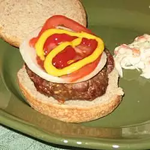

Home
Burger Recipe

Description
A very healthy AND flavorful burger with a little extra crunch.
Ingredients
- 2 pounds extra-lean ground beef
- 1 ounce dry onion soup mix
- 1 egg
- 2 teaspoons hot pepper sauce
- 2 teaspoons worcestrershire sauce
- 1/4 teaspoon ground black pepper
- 3/4 cup rolled oats
Steps
-
Preheat an outdoor grill for medium high heat and lightly oil grate.
-
In a large bowl, combine the beef, onion soup mix, egg, hot sauce and
oats. Shape into 6 patties.
-
Grill patties over medium high heat for 10 to 20 minutes, or to desired
doneness.
Home